第 11 讲：学习行走——动态平衡、ZMP、倒立摆与 SIMBICON
从步态周期到零矩点，理解双足行走为什么是“受控的跌倒”，以及如何用简化模型和反馈控制把它做出来。
◆ 学完这一讲，你应该能
能画出步行步态周期的时间轴，标出双支撑期、单支撑期，并说明支撑多边形的含义。
能用自己的话解释 ZMP（零矩点）的定义、几何意义，以及它为什么必须落在支撑多边形内。
能推导/复述 ZMP 与地面反力、质心位置、脚踝力矩之间的关系式，并说明“零矩”指的是哪个矩为零。
能说明倒立摆模型（IPM）如何把双足机器人简化为质心+无质量连杆，以及如何用它做步态规划。
能描述 SIMBICON 的三个组成部分：周期基运动 + PD 跟踪、躯干/摆动髋的世界坐标系控制、质心速度与位置的线性反馈。
能在 UE/Unity 中把上述概念对应到动画蓝图、物理资产、PD 控制器和状态机，知道从哪里开始搭一个简易行走控制器。
核心结论速记
行走的本质是“没有飞行阶段的连续移动”，每一步都包含双支撑期和单支撑期；跑步才有飞行阶段。
静态平衡行走要求质心（CoM）在支撑多边形（Support Polygon）正上方，这既慢又笨拙；动态平衡允许质心跑到支撑多边形外，靠惯性“倒”过去再迈步接住。
ZMP（零矩点）是地面反力合力作用点，也是地面反力关于该点的水平力矩为零的点；只要 ZMP 落在支撑多边形内，脚就不会转动，人就能保持动态平衡。
ZMP 的存在性是动态平衡的判据：解出的 ZMP 跑出支撑多边形，意味着脚会绕边缘翻转，平衡被破坏。
简化模型（倒立摆 IPM）把复杂的人形系统抽象成质心+无质量连杆，先规划抽象模型，再用 IK/逆动力学映射回真实角色。
倒立摆模型告诉我们：行走 = 受控的跌倒 + 及时迈步（Falling + Step Planning）。
SIMBICON 用“周期基运动 + PD 跟踪 + 有限状态机 + 质心线性反馈”实现鲁棒行走，反馈项同时看质心位置误差和速度误差。
011. 步态周期：行走与跑步的分界线
先把“走路”这件事拆成时间轴。一个完整的步态周期（gait cycle）从一只脚触地开始，到同一只脚再次触地结束。课件把周期分成两类阶段：
- 支撑期（Stance Phase）：脚在地面上、承担体重。
- 摆动期（Swing Phase）：脚离地、向前摆动。
对行走（Walking）来说，任意时刻至少有一只脚在地上，因此存在双支撑期（Double Stance Phase）——两只脚同时着地；其余时间是单支撑期（Single Stance Phase）。课件反复强调的定义是：行走是“没有飞行阶段（flight phase）的移动”。
对跑步（Running）来说，存在两只脚都离地的飞行期（Flight Phase），这是行走与跑步在步态上的根本区别。
为什么先讲这个？因为后面所有的平衡分析都建立在“哪只脚在支撑、支撑面有多大”之上。支撑期决定了支撑多边形（Support Polygon）——把所有着地点（脚底接触区域）连起来形成的凸多边形。单支撑期支撑多边形就是一只脚的脚底轮廓；双支撑期是两只脚轮廓的凸包，面积大得多。
直觉上：支撑多边形就是你“能站住的底盘”。底盘越大越稳，越小越需要动态平衡。
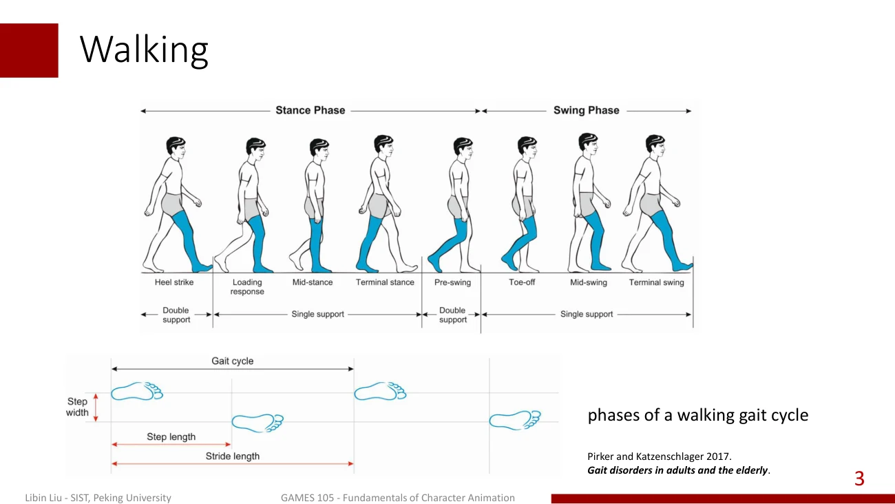
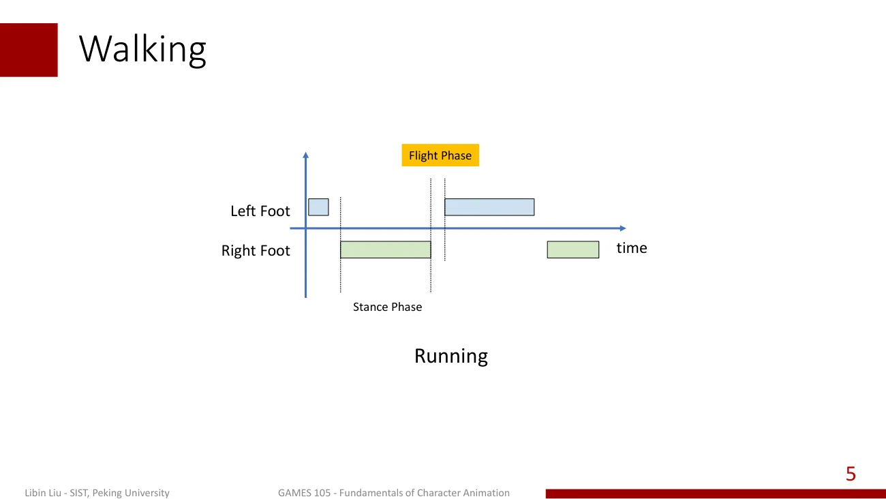
补充说明
支撑多边形是后面 ZMP 判据的“容器”，务必先建立这个几何概念。
常见坑
把“双支撑期”误认为“双脚并拢站立”：双支撑期是两只脚前后错开同时着地，支撑多边形是两脚轮廓的凸包，不是一个小方块。
混淆行走与跑步的判据：判据不是速度快慢，而是有没有飞行期；快走也可能没有飞行期，慢跑也可能有。
UE / Unity 落地
UE：动画蓝图里的状态机可以用
Stance/Swing两个状态对应支撑期与摆动期，用脚部 IK 的Foot Lock保证支撑脚不滑。Unity：用 Animator 的
StateMachineBehaviour或 Playable Graph 的混合节点管理左右脚相位，用OnAnimatorIK做脚部贴地。
022. 静态平衡 vs 动态平衡：质心要不要待在支撑多边形里
有了支撑多边形，就可以定义两种平衡策略。
静态平衡（Static Balance）：要求质心（Center of Mass, CoM）在水平面上的投影始终落在支撑多边形内部。这样即使人突然停住，也不会倒。课件用连续几页动画展示：双支撑期质心在两脚之间，单支撑期质心必须移到支撑脚正上方。结果就是走路像“挪”——重心左右大幅摇摆，速度慢、能耗高。
动态平衡（Dynamic Balance）：允许质心跑到支撑多边形外面，靠身体的惯性“倒”向下一步，再用迈出的脚接住自己。课件里有一句非常精辟的话：
Walking == Falling + Step Planning
也就是说，行走可以看成“受控的跌倒”：每一步都是一次小型的向前倾倒，及时迈步把身体接住，就形成了连续的行走。
这个视角解释了为什么人走路时质心会自然前移、为什么婴儿学步会跌跌撞撞——他们还在学习“什么时候该迈步”。
从控制角度看，静态平衡是动态平衡的特例（质心始终在支撑多边形内），动态平衡允许更大的步幅和更自然的动作，但需要更复杂的反馈控制。后面讲的 ZMP、倒立摆、SIMBICON 都是为动态平衡服务的工具。
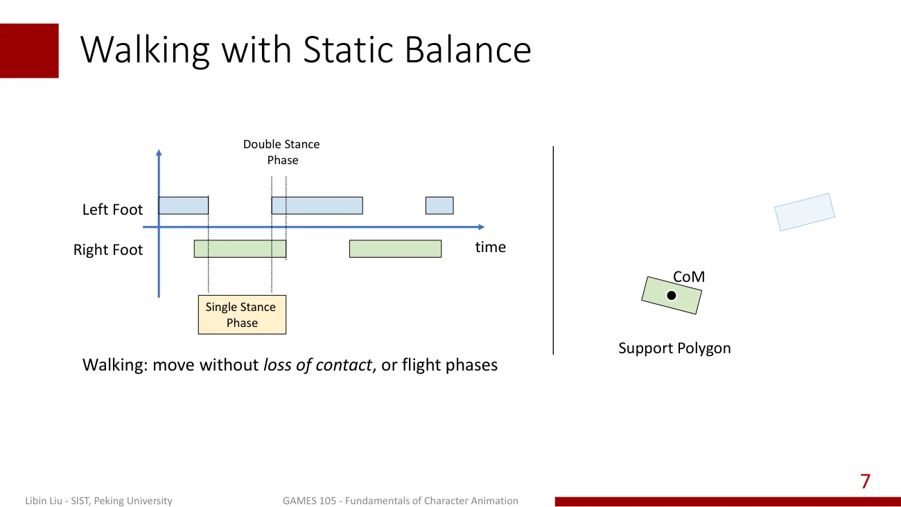
补充说明
“受控的跌倒”是理解后面所有内容的钥匙，建议记住这句话。
常见坑
把动态平衡理解为“不要平衡”：动态平衡仍然需要平衡，只是允许质心短暂越界，靠迈步和反馈把状态拉回来。
在引擎里直接让角色质心跟随动画根骨骼：如果不做物理约束，角色会在单支撑期“飘”起来；需要显式处理支撑脚与质心的相对关系。
UE / Unity 落地
UE：
Character Movement Component的bOrientRotationToMovement和根运动（Root Motion）可以部分实现“质心前移”，但真正的动态平衡需要自己写物理或控制逻辑。Unity：
Rigidbody+ConfigurableJoint可以搭一个简易的质心-脚模型，用AddForce模拟迈步时的推力。
033. ZMP：地面反力合力的作用点，也是“零矩点”
要判断动态平衡，需要一个可计算的量。课件从地面反力（Ground Reaction Force, GRF）出发。脚踩地时，地面给脚分布式的法向力和摩擦力，把所有分布力合成一个合力 \(\boldsymbol{f}_{\mathrm{GRF}}\) 和一个合力矩 \(\boldsymbol{\tau}_{\mathrm{GRF}}\)。
零矩点（Zero-Moment Point, ZMP） 定义为这样一个点 \(\boldsymbol{p}\)：地面反力关于该点的水平力矩为零。用公式说，若地面反力合力作用在 \(\boldsymbol{p}\)，则 \[ \boldsymbol{\tau}_{\mathrm{GRF}}^{xz} = \sum_i (\boldsymbol{p}_i - \boldsymbol{p}) \times \boldsymbol{f}_i^{xz} = 0 \] 其中 \(\boldsymbol{p}_i\) 是各接触点位置，\(\boldsymbol{f}_i\) 是各接触点上的力，上标 \(xz\) 表示水平面分量。
为什么叫“零矩”？因为关于 \(\boldsymbol{p}\) 点，地面反力的水平力矩恰好为零，只剩下垂直方向的力矩（如果存在的话）。在平坦地面上，这个点其实就是压力中心（Center of Pressure, CoP），即 \[ \boldsymbol{p} = \frac{\sum_i \boldsymbol{p}_i f_i^y}{\sum_i f_i^y} \] 即各接触点按垂直力加权的平均位置。
关键结论：ZMP 必须落在支撑多边形内。因为所有地面反力都作用在脚底接触区域内，它们的加权平均不可能跑到区域外。如果根据运动方程解出的 ZMP 跑出去了，说明假设“脚不动”不成立——脚会绕支撑多边形边缘翻转，平衡被破坏。
所以，ZMP 的存在性是动态平衡的判据：只要存在一个落在支撑多边形内的 ZMP，脚就不会转动，人就能保持平衡。
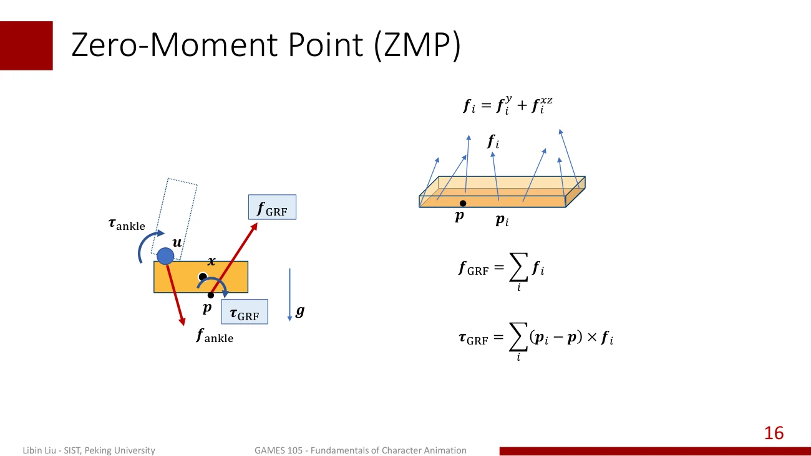
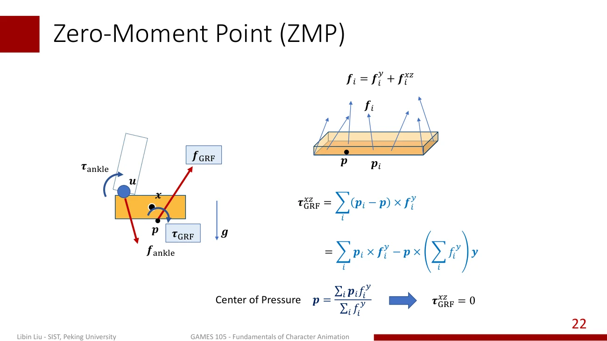
补充说明
ZMP 的严格定义需要假设地面平坦水平；课件在推导中明确写了这个假设。
常见坑
把 ZMP 和质心投影混为一谈：ZMP 是地面反力的作用点，质心投影是质量分布的中心；静态站立时两者重合，动态行走时通常不重合。
忽略“水平力矩为零”这个条件：ZMP 定义的是水平力矩为零，不是所有力矩为零；垂直力矩可以不为零（例如脚在地面上扭转）。
在斜坡上直接套用平坦地面的 ZMP 公式：课件假设地面平坦水平，斜坡上 \(\boldsymbol{p}_i - \boldsymbol{p}\) 不再位于水平面，公式需要修正。
UE / Unity 落地
UE：物理资产（Physics Asset）里的脚部碰撞体可以近似支撑多边形；用
LineTrace检测脚底接触点，可以估算 CoP。Unity：用
Physics.Raycast或OnCollisionStay收集脚底接触点，按法向力加权求平均得到近似 CoP。
044. 从力矩平衡解出 ZMP：为什么它必须落在支撑多边形内
课件接着用静力平衡把 ZMP 和质心、脚踝力矩联系起来。考虑支撑脚，它受到三个力：脚踝处的力 \(\boldsymbol{f}_{\mathrm{ankle}}\)、地面反力 \(\boldsymbol{f}_{\mathrm{GRF}}\)、重力 \(m\boldsymbol{g}\)。平衡条件为 \[ \boldsymbol{f}_{\mathrm{ankle}} + \boldsymbol{f}_{\mathrm{GRF}} + m\boldsymbol{g} = 0 \] 对任意参考点 \(\boldsymbol{o}\) 取矩： \[ (\boldsymbol{u}-\boldsymbol{o})\times \boldsymbol{f}_{\mathrm{ankle}} + (\boldsymbol{p}-\boldsymbol{o})\times \boldsymbol{f}_{\mathrm{GRF}} + (\boldsymbol{x}-\boldsymbol{o})\times m\boldsymbol{g} + \boldsymbol{\tau}_{\mathrm{ankle}} = \boldsymbol{\tau}_{\mathrm{GRF}} \] 其中 \(\boldsymbol{u}\) 是脚踝位置，\(\boldsymbol{x}\) 是质心位置，\(\boldsymbol{p}\) 是 ZMP，\(\boldsymbol{\tau}_{\mathrm{ankle}}\) 是脚踝力矩。
把方程投影到水平面（\(xz\) 平面），并利用 ZMP 的定义 \(\boldsymbol{\tau}_{\mathrm{GRF}}^{xz}=0\)，就可以解出 \(\boldsymbol{p}\)。课件用这个方程说明：如果解出的 \(\boldsymbol{p}\) 落在支撑多边形外，它就不可能是真正的压力中心，因为所有地面反力都作用在多边形内，加权平均不可能跑到外面。此时脚会绕多边形边缘转动，平衡失败。
反过来，如果 \(\boldsymbol{p}'\) 是真实的压力中心（在多边形内），那么它满足的方程和上面解出的 \(\boldsymbol{p}\) 不同——差值就是脚转动所需的力矩。
所以，ZMP 不只是一个数学定义，它是动态平衡的可计算判据：每一步都检查解出的 ZMP 是否在支撑多边形内，就能判断这一步是否稳。
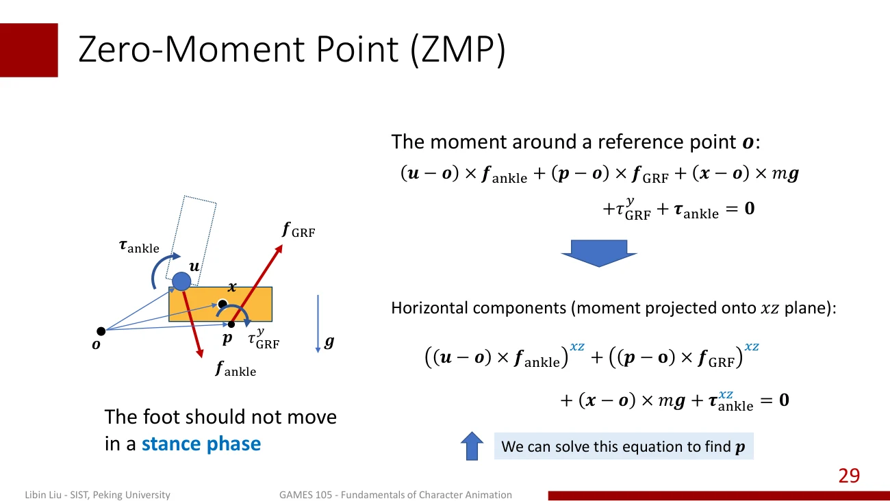
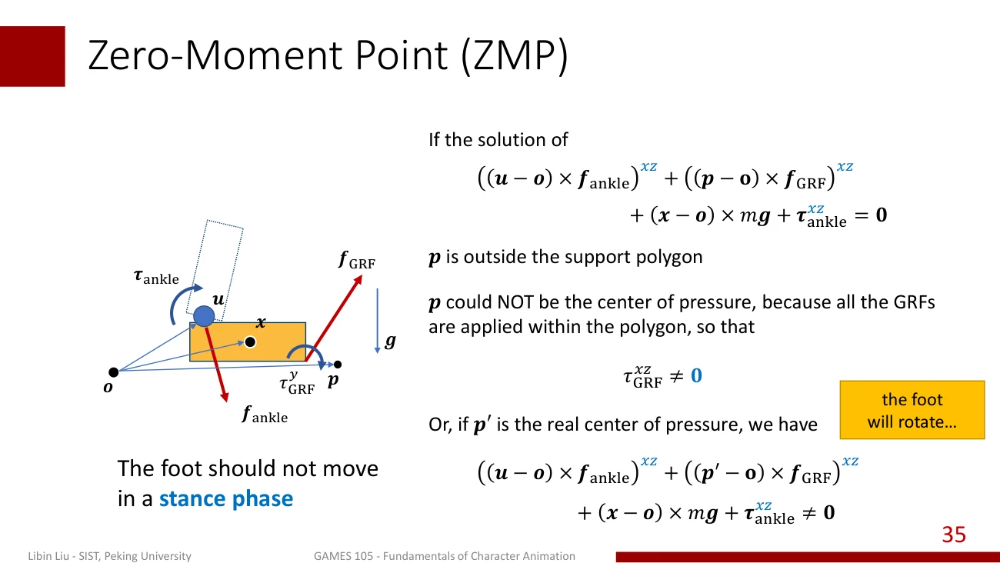
补充说明
这一节的推导是后面所有控制方法的理论基础，建议自己动手推一遍水平面投影。
常见坑
忘记投影到水平面：ZMP 的定义只要求水平力矩为零，垂直分量不参与，推导时要把方程投影到 \(xz\) 平面。
把脚踝力矩 \(\boldsymbol{\tau}_{\mathrm{ankle}}\) 漏掉：脚踝主动发力会改变 ZMP 位置，这正是控制器可以调节 ZMP 的手段。
认为 ZMP 一定等于 CoP：在脚不转动的假设下两者重合；脚一旦转动，ZMP 就不存在（或说跑出支撑多边形），CoP 仍然存在。
UE / Unity 落地
UE：
PhysicsConstraint的角驱动可以模拟脚踝力矩，通过调节驱动强度间接影响 ZMP。Unity：
ConfigurableJoint的angularXDrive/angularYZDrive可以充当脚踝 PD 控制器。
055. 简化模型：倒立摆与“受控的跌倒”
真实人形有几十个自由度，直接控制太难。课件的思路是：先把系统简化成抽象模型，规划抽象模型的运动，再映射回真实角色。
最常用的简化模型是倒立摆模型（Inverted Pendulum Model, IPM）：把整个身体的质量集中到质心（CoM），质心通过一根无质量连杆连接到支撑脚（或支撑点）。这就像把扫帚倒立放在手掌上——质心在支点上方，天然不稳定，需要不断调整支点位置。
课件引用 Coros et al. 2010 的 Generalized Biped Walking Control，给出了一套流程：
- 把角色的质心和支撑脚映射为倒立摆；
- 规划下一步脚的位置，使质心恰好落在摆的顶端（即下一步的支撑点上）；
- 根据步态规划生成脚的轨迹；
- 用逆运动学（IK）计算目标姿态。
这套流程的核心思想就是：行走 = 受控的跌倒 + 迈步规划。每一步都是让质心向前“倒”，然后及时把脚放到质心将要到达的位置接住它。
倒立摆模型虽然简单，但抓住了双足行走最本质的动力学：质心在支撑点上方的不稳定性。后面讲的 SIMBICON 也是在这个直觉上做反馈控制。
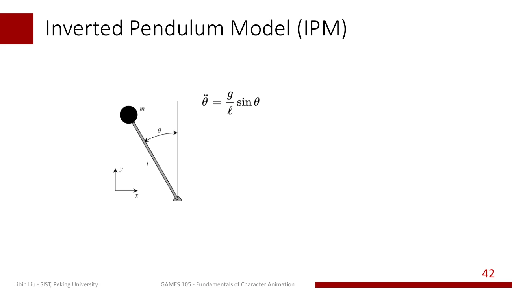
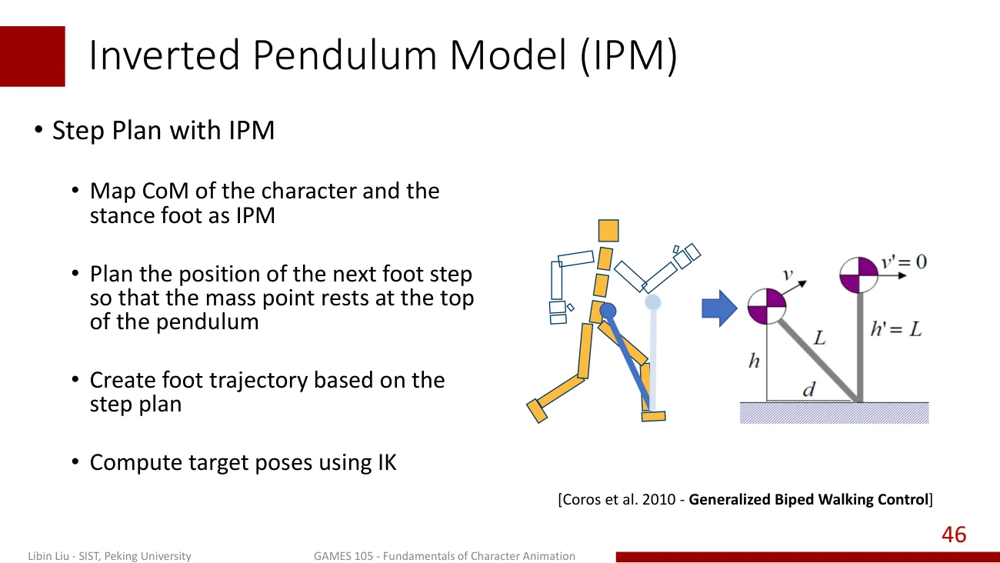
补充说明
倒立摆的线性化版本（LIPM）有解析解，是很多步态规划算法的基础，感兴趣可以进一步查 Kajita 的工作。
常见坑
把倒立摆的支点当成质心：支点在脚底（支撑点），质心在摆的顶端，两者通过无质量连杆连接。
规划步态时忽略质心速度：只规划位置不规划速度，会导致下一步接不住；倒立摆的状态包括位置和速度。
把简化模型的运动直接当最终动画：还需要 IK/逆动力学映射回真实骨骼，否则脚会穿地或滑步。
UE / Unity 落地
UE：可以用
Control Rig做 IK，把简化模型规划出的脚部目标位置映射到角色骨骼。Unity：
Animation Rigging包的TwoBoneIKConstraint可以把规划出的脚部目标映射到腿骨。
066. SIMBICON：用反馈控制把“跌倒”变成“行走”
有了简化模型和 ZMP 判据，接下来要问：怎么真正控制一个双足角色走起来？课件介绍了 SIMBICON（SIMple BIped Locomotion CONtrol），Yin et al. 2007。它的结构可以拆成三步：
第一步：周期基运动 + PD 跟踪。 先设计一个周期性的基础动作（base motion），可以用有限状态机（FSM）或动作捕捉数据驱动。每个关节用 PD 控制器跟踪目标角度： \[ \tau = k_p (q_d - q) - k_d \dot{q} \] 其中 \(q_d\) 是目标角度，\(q\) 是当前角度，\(\dot{q}\) 是角速度。这一步保证角色“大致”按设计动作走。
第二步：躯干和摆动髋的世界坐标系控制。 基运动是在局部坐标系里定义的，但躯干需要保持竖直、摆动腿需要朝世界坐标系的目标方向摆。课件用牛顿第三定律说明：控制躯干和摆动髋相对于世界坐标系的姿态，会产生反作用力矩，影响全身。具体做法是把目标角度 \(q_d\) 从局部坐标系转换到世界坐标系再跟踪。
第三步：质心反馈。 这是 SIMBICON 的精髓。基运动是开环的，遇到扰动会倒；于是加入质心位置和速度的线性反馈： \[ \theta_d = \theta_{d0} + c_d d + c_v v \] 其中 \(\theta_d\) 是摆动腿的目标角度，\(\theta_{d0}\) 是基运动给出的角度，\(d\) 是质心位置误差，\(v\) 是质心速度，\(c_d\)、\(c_v\) 是反馈增益。
直觉：如果质心偏前（\(d>0\)）或向前速度太大（\(v>0\)），就把摆动腿往前多摆一点，接住身体；反之则少摆一点。这就是“受控的跌倒”的具体实现。
课件最后用一张图总结：线性反馈控制 + 有限状态机，就是 SIMBICON 的完整结构。
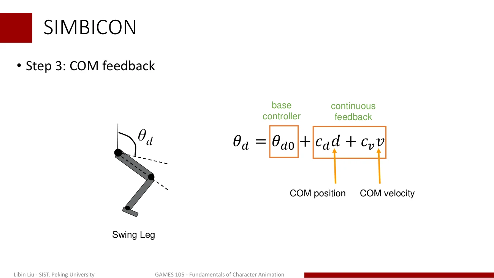
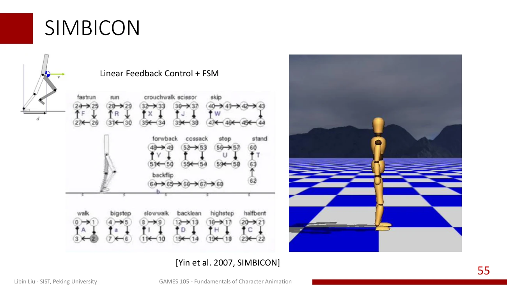
补充说明
SIMBICON 的反馈增益 \(c_d\)、\(c_v\) 需要根据角色质量和步态调参，课件没有给具体数值。
常见坑
只加位置反馈不加速度反馈：只根据质心位置调整会震荡，速度项提供阻尼，两者缺一不可。
PD 增益调得过大：\(k_p\) 太大会导致关节抖动甚至发散；先用临界阻尼附近的值，再微调。
反馈在局部坐标系里做：躯干和摆动髋的控制需要转换到世界坐标系，否则角色转身时反馈方向会错。
UE / Unity 落地
UE：用
Animation Blueprint的Event Graph实现 FSM，用Control Rig的 PD 节点或自己写Blueprint计算力矩；质心位置可以用Get Component Location近似。Unity：用
Animator的StateMachine做 FSM，用ConfigurableJoint的targetRotation做 PD 跟踪，用Rigidbody.centerOfMass读取质心。
SIMBICON 风格的摆动腿目标角度计算（伪代码）（cpp）
// 每帧更新
float d = comPos.x - desiredComPos.x; // 质心位置误差
float v = comVel.x; // 质心速度
float theta_d = theta_d0 + c_d * d + c_v * v; // 摆动腿目标角度
// PD 控制
float torque = kp * (theta_d - q) - kd * qd;
applyTorque(swingHip, torque);引擎对照表
| 概念 / 效果 | Unreal Engine | Unity |
|---|---|---|
支撑多边形 | 用脚部碰撞体或 LineTrace 接触点近似 | 用 Collider 接触点或 Raycast 近似 |
质心（CoM） |
|
|
PD 控制器 |
|
|
有限状态机（FSM） |
|
|
逆运动学（IK） |
|
|
ZMP / CoP 估算 | 脚底接触点按法向力加权平均 |
|
术语双语表
| English | 中文 | 说明 |
|---|---|---|
| Gait Cycle | 步态周期 | 同一只脚两次触地之间的完整动作序列。 |
| Double Stance Phase | 双支撑期 | 两只脚同时着地的阶段，行走特有。 |
| Flight Phase | 飞行期 | 两只脚都离地的阶段，跑步特有。 |
| Support Polygon | 支撑多边形 | 所有着地点形成的凸多边形，是 ZMP 必须落入的区域。 |
| Center of Mass (CoM) | 质心 | 质量分布的中心，简化模型的核心状态。 |
| Zero-Moment Point (ZMP) | 零矩点 | 地面反力关于该点的水平力矩为零，是动态平衡判据。 |
| Center of Pressure (CoP) | 压力中心 | 地面反力按垂直力加权的平均作用点，脚不转时与 ZMP 重合。 |
| Inverted Pendulum Model (IPM) | 倒立摆模型 | 把身体简化为质心+无质量连杆，支点在支撑脚。 |
| SIMBICON | 简单双足运动控制 | Yin et al. 2007 提出的行走控制方法，基运动+PD+质心反馈。 |
| PD Controller | 比例-微分控制器 | 用位置误差和速度误差计算力矩的反馈控制器。 |
课后练习
01 画出步行一个完整步态周期的时间轴，标出左脚的支撑期、摆动期，以及双支撑期和单支撑期。并说明行走与跑步在步态上的根本区别。
查看答案
提示：
从一只脚触地开始，到同一只脚再次触地结束。
时间轴上左脚支撑期与摆动期交替；支撑期内包含双支撑期（两脚同时着地）和单支撑期（仅左脚着地）。行走没有飞行期，任意时刻至少一只脚着地；跑步存在两只脚都离地的飞行期。
02 解释 ZMP 的定义，并说明为什么 ZMP 必须落在支撑多边形内。如果解出的 ZMP 跑出支撑多边形，物理上会发生什么？
查看答案
提示：
从地面反力的分布和加权平均角度思考。
ZMP 是地面反力关于该点的水平力矩为零的点，也是地面反力的合力作用点（平坦地面上等于压力中心）。因为所有地面反力都作用在脚底接触区域内，它们的加权平均不可能跑到支撑多边形外。如果解出的 ZMP 在多边形外，说明假设“脚不动”不成立，脚会绕支撑多边形边缘转动，平衡被破坏。
03 倒立摆模型把双足角色简化成什么？用这个模型解释“行走 = 受控的跌倒 + 迈步规划”。
查看答案
提示：
质心在支点上方，天然不稳定。
简化成质心（集中质量）+ 无质量连杆 + 支撑点。质心在支撑点上方，是不稳定平衡，会自然向前倒；每一步让质心向前倒，同时及时把脚迈到质心将要到达的位置接住它，就形成连续行走。
04 SIMBICON 的质心反馈公式是 \(\theta_d = \theta_{d0} + c_d d + c_v v\)。说明 \(d\)、\(v\) 的物理意义，以及为什么需要同时有位置反馈和速度反馈。
查看答案
提示：
只加位置反馈会怎样？
\(d\) 是质心位置误差，\(v\) 是质心速度。只加位置反馈会导致系统震荡（像弹簧没有阻尼）；速度项提供阻尼，使反馈稳定。两者结合才能既纠正位置偏差又抑制震荡。
05 在 UE 或 Unity 中，设计一个简易的行走控制器：说明你会用哪些组件/节点实现 FSM、PD 跟踪、质心反馈和 IK。
查看答案
提示：
参考 engine_table。
UE：用 Animation Blueprint 状态机做 FSM；用 Control Rig 或 PhysicsConstraint 角驱动做 PD 跟踪；用 Get Component Location 读取质心，在 Event Graph 里计算反馈；用 Control Rig 的 IK 节点做脚部贴地。Unity：用 Animator 状态机做 FSM；用 ConfigurableJoint 的 angularXDrive 做 PD；用 Rigidbody.centerOfMass 读取质心；用 Animation Rigging 的 TwoBoneIKConstraint 做 IK。